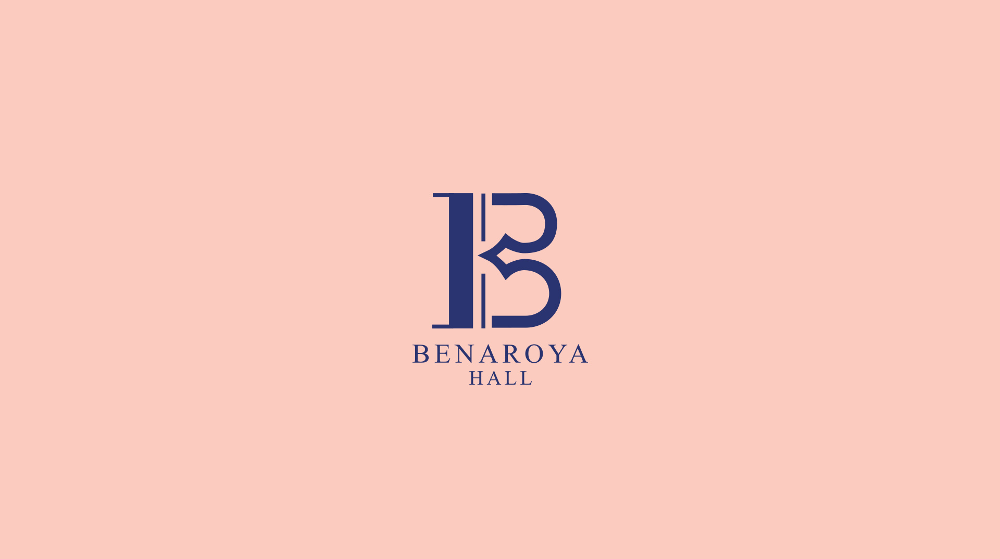
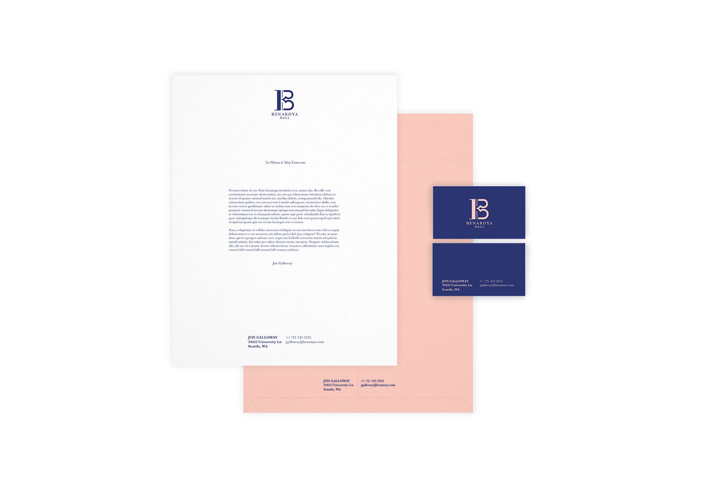
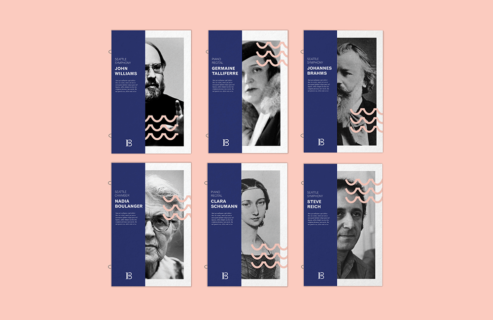
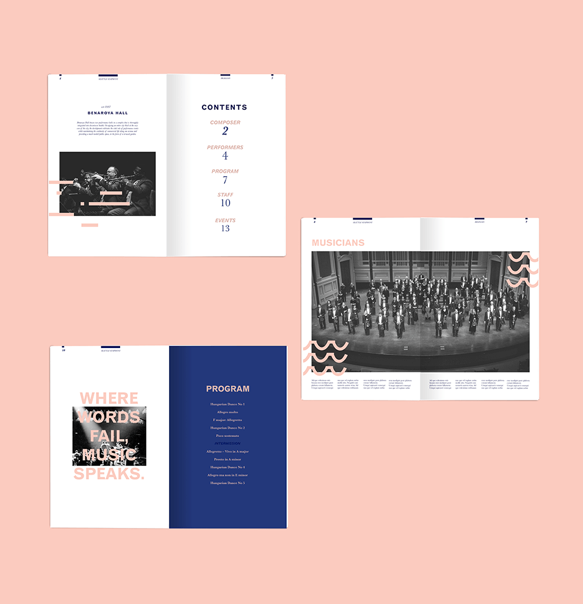

Benaroya Hall
Type of Project: Branding
When: Fall 2015
Student Project
Benaroya Hall is a music hall located in Seattle, Washington. It is the home for the Seattle Symphony. I decided to do this project out of my love for classical music. The logo was inspired by the Alto and Tenor clefs. The colors were inspired by the ocean and what the symphony has as colors currently. This project was done for my Branding 1 class, Fall 2015.



